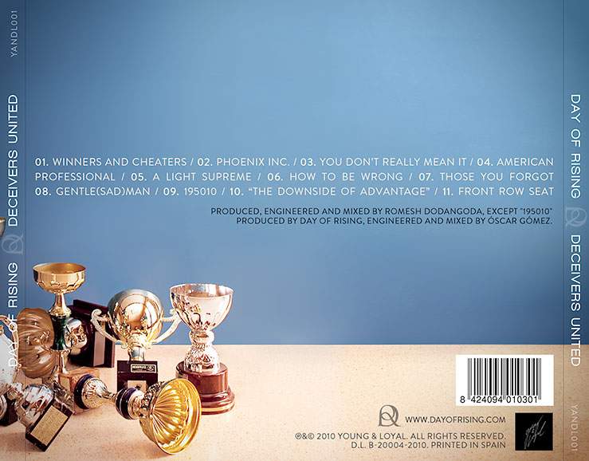
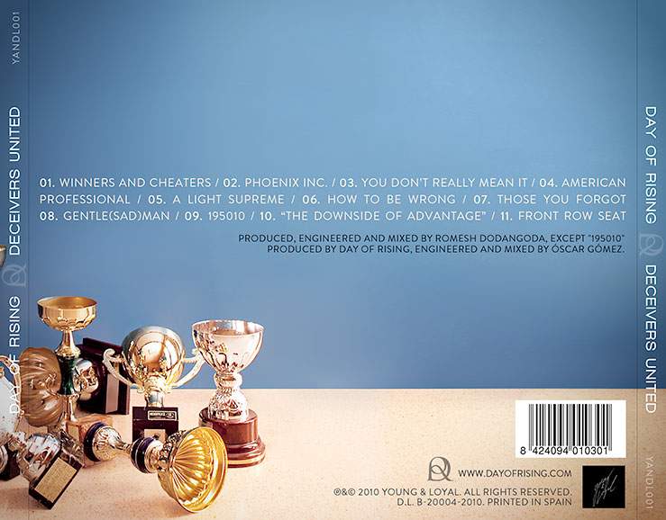

Contact Information
- Name
- Óscar Gómez Alcañiz
- oscar.gomez.alcaniz@gmail.com
- Skype
- oscar.gomez.alcaniz
Personal Information
- Date of Birth
- 09/06/1983
- Born in
- Castellón de la Plana
- Nationality
- Spanish
- Gender
- Male
Work Experience
September 2014 — Currently
CERN | International Research Institution based in Switzerland and France.
Data Visualization / Reporting / Web Development
Developing solutions for reporting and data visualization using JavaScript and PHP, on Pentaho BI Server.
December 2013 — April 2014
Universitat Jaume I | University in Castellón, Spain.
Collaboration Scholarship.
I did a collaboration project at the Computer Science Dpt., for the Robotics Group, that involved using Microsoft's Kinect to track a hand in 3D, and translate these movements to a robot hand.
May 2013 — November 2013
Digital Ceramic | Photographic Files for Inkjet in Almazora, Spain.
Ceramic Tiles Design / Web Development / Photo Process
Web development, graphic design, creating ceramic ambients infographics.
January 2011 — May 2013
Private Teacher | Castellón, Spain.
English, Science & IT Teacher
In order to cope with my studies, I started to teach maths, physics, programming, technical drawing and English to high school students.
January 2008 — December 2010
Signo Comunicación | Communication Agency in Castellón, Spain.
Developer / Designer
Web development department. Graphic design, web development & DTP for several magazines.
September 2008 — June 2010
Espai d'Art Fotogràfic | Arts School in Valencia, Spain
Digital Photography Teacher
Adobe Photoshop teacher at beginner, intermediate and advanced levels, for digital photography students. It also involved weekend courses of 15 practical-theoretical hours.
October 2006 — December 2007
Photomart Ltd. | Photographic Supplies Wholesaler in London, United Kingdom.
Graphic Designer / Website Manager
My tasks involved the management of the corporate website, the creation of advertising on several media (mainly online and press), development of mini-sites, designing and laying out a monthly magazine and editing an electronic weekly magazine.
June 2004 — July 2005
La Lupa | Local Trade Newspaper in Castellón, Spain.
Graphic Designer
Graphic design, advertising campaigns design and weekly magazine DTP.
January 2002 — July 2002
CDM – GTFadrell | Computer Retail & IT Services in Castellón, Spain.
Technical Support / Equipment Assembly
Technical support, assembly and distribution of computer equipment.
Side jobs
Throughout all this period, in between jobs or along my studies at high school and university, I always carried out other jobs non-related to IT or design, which contributed towards my – personal rather than professional – development.
Education
2010 – Currently
Universitat Jaume I | Castellón
Degree on Computer Science and Engineering.
2004 – 2005
Escola Superior d’Arts i Oficis | Castellón
Degree on Graphic Design – First year completed.
2003 – 2004
Course on Web Design, HTML and FLASH | Castellón
Intensive course – Completed after three months.
2000
IES Penyagolosa | Castellón
BUP+COU (high school).
Skills
IT Knowledge
Operating Systems
- Linux | Ubuntu / Archlinux / CentOS / AmazonLinux
- Windows | XP / Vista / 7 / 8 / 10
- Mac OS X | 10.x
Design tools
- Adobe Creative Suite | Photoshop / InDesign / Illustrator / Flash
Programming languages & Frameworks
- Modern Web | HTML5 / CSS3
- Javascript | jQuery 2 / AngularJS 1.5 / EmberJS / ES2015 / Gulp / Babel
- PHP | Slim Framework 3 / CodeIgniter 4 / Laravel 5 / Drupal 7
- Java | Spring 3
- Python | SciPy / PyBrain
- C/C++ | OpenCV / ROS
- Ruby | Rails 4
- DataBases | MySQL 5 / Oracle DB 12 / PL/SQL 11 / MongoDB
- Actionscript 3.0 | Flash
Other computing skills
- CLI Tools | Bash / PowerShell
- Development environment | Vagrant / Docker
Office tools
- Microsoft Office | SharePoint / InfoPath / VBA / Access / Excel
Audio/video editing tools
- Steinberg Nuendo | Music production / Mixing / Mastering
- Adobe Audition | Sound edition
- After Effects | Video editing / Special FX
Languages
Level classification according to the Common European Framework of Reference for Languages:
| Speaking | Listening | Reading | Writing | |
|---|---|---|---|---|
| English | C1 | C2 | C2 | C1 |
| French | B1 | B2 | C1 | B2 |
| Spanish | C2 (native) | |||
| Catalan / Valencian | C1 | C1 | C2 | C1 |
Driving License
I got my driving license on 2003, and I have a wide experience with both tourisms and vans.
Personal Skills
I am an extrovert and kind person, who loves enjoying a job as much as possible. I am detail oriented in everything I do. I am always willing to learn in order to solve problems. I consider myself sincere, responsible and committed to my job. I enjoy music, cinema and natural life, I can play several musical instruments and consider myself a creative person.
Work Examples
Design
Day Of Rising CD Artwork Design
Original shots


Results
 
